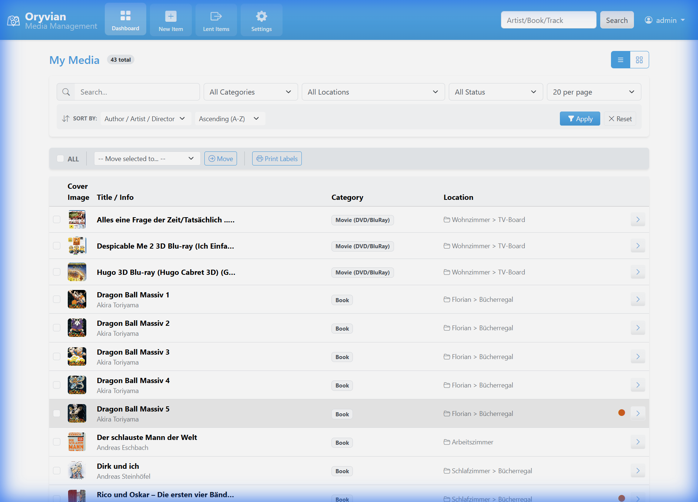
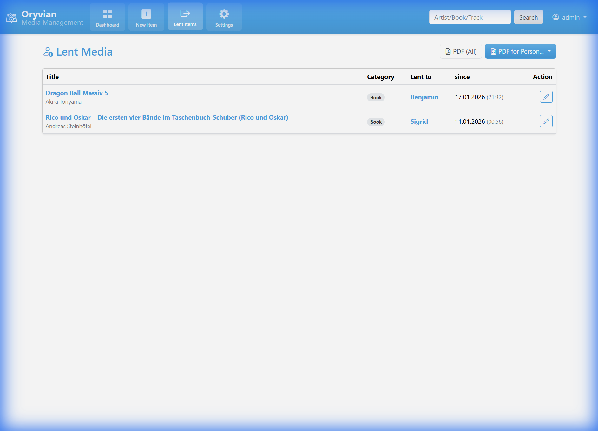

Welcome to Oryvian
Oryvian is a modern, web-based media management system designed to help you organize your physical collection of books, movies, music, and video games.
Dashboard Overview
The Dashboard is your main control center. Here you can search, filter, and manage your entire collection.
Powerful Search
Search by title, artist, barcode, or even tracks within albums.
Categorization
Filter by category (Books, CDs, Vinyl, etc.) or storage location.
Capturing New Media
Adding new items is effortless thanks to automatic metadata lookup via EAN/Barcode.
Example: Adding a Music CD
- 1 Click on the "New Item" button in the navbar.
- 2 Enter the Barcode (e.g.,
602435973654) and click the search icon. - 3 The system fetches metadata from Discogs, including the cover, title, and tracklist.
Media Detail View
The Detail View provides all specific information about an item, including its current status and integration features.

- Tracks & Info: See complete tracklists for music media.
- Spotify Integration: Listen to previews directly in the app if configured.
- QR Codes: Each item gets a unique QR code for physical tagging.
- Lending Status: Clearly see if an item is available or currently lent out.
Lending System
Keep track of who borrowed what. The Lending View lists all items currently not in your shelf.
PDF Export
Export lending lists as PDF for specific persons or your entire collection to maintain professional tracking.
Settings & Management
Configure your personal profile, set up API tokens, and manage administrative tasks.
Owner & Label Info
Language, Theme & Maintenance
External Connections
Maintenance Features
Admin users can perform system cleanup (e.g., removing orphaned images) and manage the backup/restore system under the System tab.